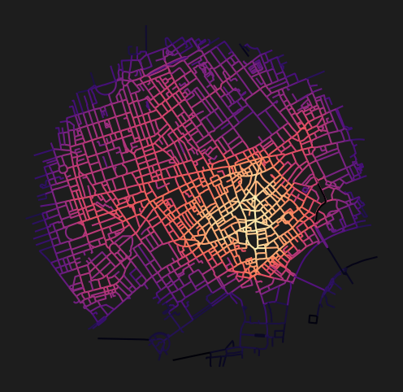
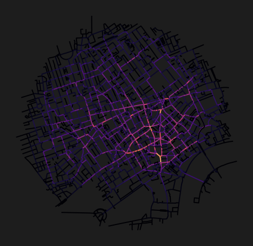

import matplotlib.pyplot as plt
from cityseer.metrics import networks
from cityseer.tools import graphs, ioNetwork centrality from OSM data
Calculate metric distance centralities for OSM data.
Prepare the network as shown in OSM examples. For example, from a relation id, bounding box, buffered point, or for extents defined from a loaded file. This example uses a buffered point.
Using a simplified representation is recommended, otherwise centrality measures will be distorted for “messier” portions of the network.
lng, lat = -0.13396079424572427, 51.51371088849723
buffer = 1500
poly_wgs, epsg_code = io.buffered_point_poly(lng, lat, buffer)
G = io.osm_graph_from_poly(poly_wgs)
G_dual = graphs.nx_to_dual(G)WARNING:cityseer.tools.io:Merging node 12450391665 into 25544116 due to identical x, y coords.
WARNING:cityseer.tools.io:Unable to parse level info: -`;-4
WARNING:cityseer.tools.io:Unable to parse level info: -`;-4
WARNING:cityseer.tools.io:Unable to parse level info: -`;-4
INFO:cityseer.tools.graphs:Generating interpolated edge geometries.
INFO:cityseer.tools.io:Converting networkX graph to CRS code 32630.
INFO:cityseer.tools.io:Processing node x, y coordinates.
INFO:cityseer.tools.io:Processing edge geom coordinates, if present.
INFO:cityseer.tools.graphs:Removing filler nodes.
INFO:cityseer.tools.util:Creating edges STR tree.
INFO:cityseer.tools.graphs:Removing filler nodes.
INFO:cityseer.tools.graphs:Removing dangling nodes.
INFO:cityseer.tools.graphs:Removing filler nodes.
INFO:cityseer.tools.util:Creating edges STR tree.
INFO:cityseer.tools.graphs:Splitting opposing edges.
INFO:cityseer.tools.graphs:Squashing opposing nodes
INFO:cityseer.tools.graphs:Merging parallel edges within buffer of 25.
INFO:cityseer.tools.util:Creating edges STR tree.
INFO:cityseer.tools.graphs:Splitting opposing edges.
INFO:cityseer.tools.graphs:Squashing opposing nodes
INFO:cityseer.tools.graphs:Merging parallel edges within buffer of 25.
INFO:cityseer.tools.util:Creating edges STR tree.
INFO:cityseer.tools.graphs:Splitting opposing edges.
INFO:cityseer.tools.graphs:Squashing opposing nodes
INFO:cityseer.tools.graphs:Merging parallel edges within buffer of 25.
INFO:cityseer.tools.util:Creating edges STR tree.
INFO:cityseer.tools.graphs:Splitting opposing edges.
INFO:cityseer.tools.graphs:Squashing opposing nodes
INFO:cityseer.tools.graphs:Merging parallel edges within buffer of 25.
INFO:cityseer.tools.util:Creating nodes STR tree
INFO:cityseer.tools.graphs:Consolidating nodes.
INFO:cityseer.tools.graphs:Merging parallel edges within buffer of 25.
INFO:cityseer.tools.graphs:Removing filler nodes.
INFO:cityseer.tools.util:Creating nodes STR tree
INFO:cityseer.tools.graphs:Consolidating nodes.
INFO:cityseer.tools.graphs:Merging parallel edges within buffer of 25.
INFO:cityseer.tools.graphs:Removing filler nodes.
INFO:cityseer.tools.util:Creating nodes STR tree
INFO:cityseer.tools.graphs:Consolidating nodes.
INFO:cityseer.tools.graphs:Merging parallel edges within buffer of 25.
INFO:cityseer.tools.graphs:Removing filler nodes.
INFO:cityseer.tools.util:Creating nodes STR tree
INFO:cityseer.tools.graphs:Consolidating nodes.
INFO:cityseer.tools.graphs:Merging parallel edges within buffer of 25.
INFO:cityseer.tools.graphs:Removing filler nodes.
INFO:cityseer.tools.util:Creating nodes STR tree
INFO:cityseer.tools.util:Creating edges STR tree.
INFO:cityseer.tools.graphs:Snapping gapped endings.
INFO:cityseer.tools.util:Creating edges STR tree.
INFO:cityseer.tools.graphs:Splitting opposing edges.
INFO:cityseer.tools.graphs:Merging parallel edges within buffer of 25.
INFO:cityseer.tools.graphs:Removing dangling nodes.
INFO:cityseer.tools.graphs:Removing filler nodes.
INFO:cityseer.tools.util:Creating edges STR tree.
INFO:cityseer.tools.graphs:Splitting opposing edges.
INFO:cityseer.tools.graphs:Squashing opposing nodes
INFO:cityseer.tools.graphs:Merging parallel edges within buffer of 25.
INFO:cityseer.tools.util:Creating nodes STR tree
INFO:cityseer.tools.graphs:Consolidating nodes.
INFO:cityseer.tools.graphs:Merging parallel edges within buffer of 25.
INFO:cityseer.tools.util:Creating edges STR tree.
INFO:cityseer.tools.graphs:Splitting opposing edges.
INFO:cityseer.tools.graphs:Squashing opposing nodes
INFO:cityseer.tools.graphs:Merging parallel edges within buffer of 25.
INFO:cityseer.tools.util:Creating nodes STR tree
INFO:cityseer.tools.graphs:Consolidating nodes.
INFO:cityseer.tools.graphs:Merging parallel edges within buffer of 25.
INFO:cityseer.tools.graphs:Removing filler nodes.
INFO:cityseer.tools.graphs:Merging parallel edges within buffer of 50.
INFO:cityseer.tools.graphs:Ironing edges.
INFO:cityseer.tools.graphs:Merging parallel edges within buffer of 1.
INFO:cityseer.tools.graphs:Removing dangling nodes.
INFO:cityseer.tools.graphs:Removing filler nodes.
INFO:cityseer.tools.graphs:Converting graph to dual.
INFO:cityseer.tools.graphs:Preparing dual nodes
INFO:cityseer.tools.graphs:Preparing dual edges (splitting and welding geoms)Use network_structure_from_nx from the cityseer package’s io module to prepare the GeoDataFrames and NetworkStructure.
# prepare the data structures
nodes_gdf, _edges_gdf, network_structure = io.network_structure_from_nx(
G_dual,
)INFO:cityseer.tools.io:Preparing node and edge arrays from networkX graph.Use the node_centrality_shortest function from the cityseer package’s networks module to calculate shortest metric distance centralities.
Use angular centralities with caution on automatically cleaned OSM networks, preferably only after visual inspection and manual cleaning.
distances = [500, 1000]
nodes_gdf = networks.node_centrality_shortest(
network_structure=network_structure,
nodes_gdf=nodes_gdf,
distances=distances,
)
nodes_gdf.head()INFO:cityseer.metrics.networks:Computing shortest path node centrality.
INFO:cityseer.config:Metrics computed for:
INFO:cityseer.config:Distance: 500m, Beta: 0.008, Walking Time: 6.25 minutes.
INFO:cityseer.config:Distance: 1000m, Beta: 0.004, Walking Time: 12.5 minutes.| ns_node_idx | x | y | live | weight | primal_edge | primal_edge_node_a | primal_edge_node_b | primal_edge_idx | dual_node | ... | cc_farness_500 | cc_farness_1000 | cc_harmonic_500 | cc_harmonic_1000 | cc_hillier_500 | cc_hillier_1000 | cc_betweenness_500 | cc_betweenness_1000 | cc_betweenness_beta_500 | cc_betweenness_beta_1000 | |
|---|---|---|---|---|---|---|---|---|---|---|---|---|---|---|---|---|---|---|---|---|---|
| 108285_108286_k0 | 0 | 698450.171116 | 5.709385e+06 | True | 1 | LINESTRING (698442.587 5709352.756, 698455.797... | 108285 | 108286 | 0 | POINT (698450.171116 5709384.525724) | ... | 5918.053223 | 57333.406250 | 0.204284 | 0.281617 | 0.142108 | 0.144436 | 0.0 | 0.0 | 0.000000 | 0.000000 |
| 108286_6226833739_k0 | 1 | 698445.518357 | 5.709425e+06 | True | 1 | LINESTRING (698434.184 5709439.895, 698435.241... | 108286 | 6226833739 | 0 | POINT (698445.518357 5709425.066711) | ... | 5108.617676 | 59628.519531 | 0.270784 | 0.353576 | 0.164624 | 0.151354 | 10.0 | 10.0 | 2.237725 | 4.535670 |
| 108286_1270370717±1784656260_k0 | 2 | 698462.969675 | 5.709425e+06 | True | 1 | LINESTRING (698465.562 5709434.93, 698460.378 ... | 108286 | 1270370717±1784656260 | 0 | POINT (698462.969675 5709425.051823) | ... | 5866.822266 | 66397.101562 | 0.310603 | 0.401597 | 0.163802 | 0.162899 | 32.0 | 160.0 | 8.084851 | 20.537325 |
| 1936005006_610896454±61089|05006_k0 | 3 | 698508.474675 | 5.709425e+06 | True | 1 | LINESTRING (698494.235 5709445.995, 698518.821... | 1936005006 | 610896454±61089|05006 | 0 | POINT (698508.474675 5709425.429823) | ... | 6557.025391 | 66485.359375 | 0.213854 | 0.303207 | 0.146560 | 0.159569 | 0.0 | 0.0 | 0.000000 | 0.000000 |
| 1784656176_6226833739_k0 | 4 | 698421.101261 | 5.709460e+06 | True | 1 | LINESTRING (698434.184 5709439.895, 698432.763... | 6226833739 | 1784656176 | 0 | POINT (698421.101261 5709459.670573) | ... | 5746.660645 | 61360.828125 | 0.265466 | 0.348724 | 0.167228 | 0.156517 | 63.0 | 63.0 | 14.596126 | 29.232420 |
5 rows × 26 columns
nodes_gdf.columnsIndex(['ns_node_idx', 'x', 'y', 'live', 'weight', 'primal_edge',
'primal_edge_node_a', 'primal_edge_node_b', 'primal_edge_idx',
'dual_node', 'cc_beta_500', 'cc_beta_1000', 'cc_cycles_500',
'cc_cycles_1000', 'cc_density_500', 'cc_density_1000', 'cc_farness_500',
'cc_farness_1000', 'cc_harmonic_500', 'cc_harmonic_1000',
'cc_hillier_500', 'cc_hillier_1000', 'cc_betweenness_500',
'cc_betweenness_1000', 'cc_betweenness_beta_500',
'cc_betweenness_beta_1000'],
dtype='object')nodes_gdf["cc_hillier_500"].describe()count 2825.000000
mean 0.560724
std 0.208340
min 0.028747
25% 0.421762
50% 0.549569
75% 0.695934
max 1.059475
Name: cc_hillier_500, dtype: float64fig, ax = plt.subplots(1, 1, figsize=(8, 6), facecolor="#1d1d1d")
nodes_gdf.plot(
column="cc_hillier_500",
cmap="magma",
legend=False,
ax=ax,
)
ax.axis(False)(np.float64(697035.8123208123),
np.float64(700647.6928482385),
np.float64(5709134.052621752),
np.float64(5712638.694212982))
fig, ax = plt.subplots(1, 1, figsize=(8, 6), facecolor="#1d1d1d")
nodes_gdf.plot(
column="cc_betweenness_1000",
cmap="magma",
legend=False,
ax=ax,
)
ax.axis(False)(np.float64(697035.8123208123),
np.float64(700647.6928482385),
np.float64(5709134.052621752),
np.float64(5712638.694212982))